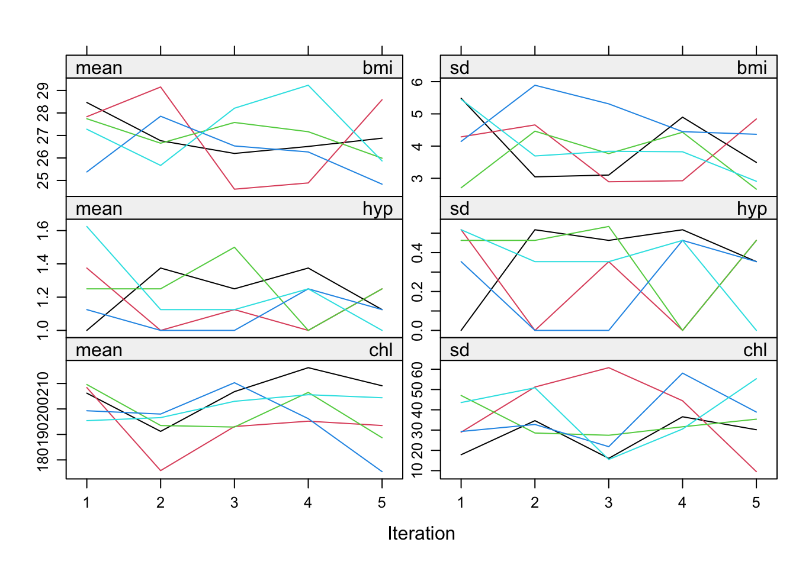
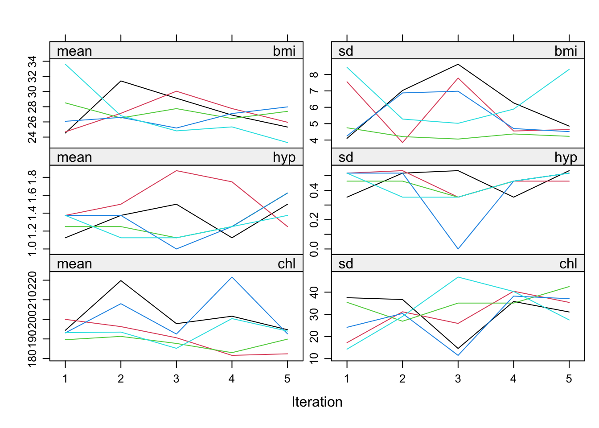
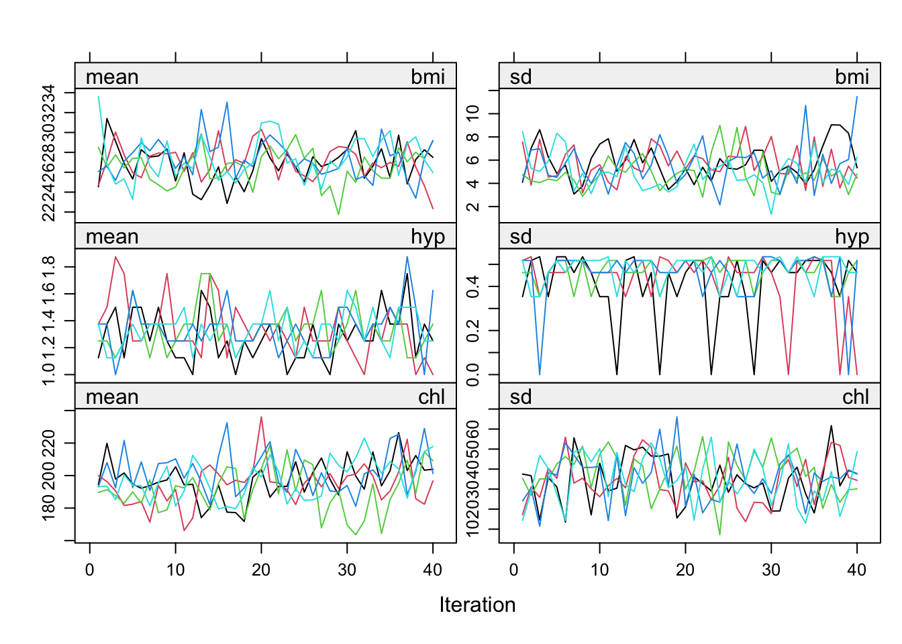
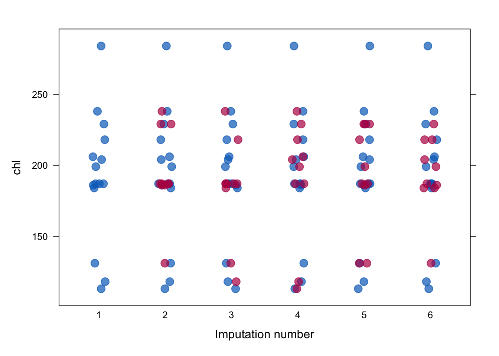
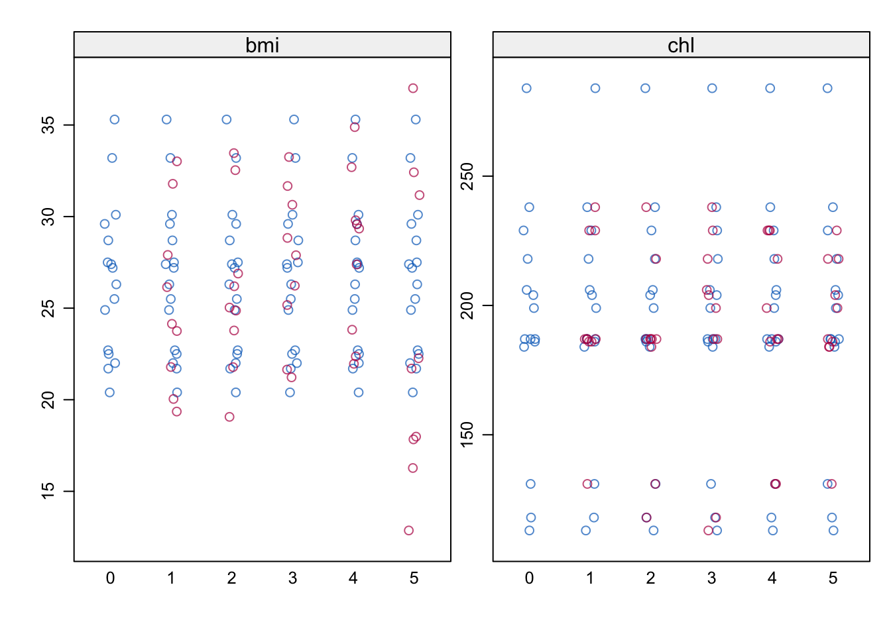

require(mice)
require(lattice)
set.seed(123)mice: Algorithmic convergence and inference pooling
Vignette 2 of 10
This is the second vignette in a series of ten.
The aim of this vignette is to enhance your understanding of multiple imputation, in general. You will learn how to pool the results of analyses performed on multiply-imputed data, how to approach different types of data and how to avoid the pitfalls researchers may fall into. The main objective is to increase your knowledge and understanding on applications of multiple imputation.
No previous experience with R is required. Again, we start by loading (with require()) the necessary packages and fixing the random seed to allow for our outcomes to be replicable.
1. Vary the number of imputations.
The number of imputed data sets can be specified by the m = ... argument. For example, to create just three imputed data sets, specify
imp <- mice(nhanes, m = 3, print=F)2. Change the predictor matrix
The predictor matrix is a square matrix that specifies the variables that are used to impute each incomplete variable. Let us have a look at the predictor matrix that was used
imp$pred age bmi hyp chl
age 0 1 1 1
bmi 1 0 1 1
hyp 1 1 0 1
chl 1 1 1 0Each variable in the data has a row and a column in the potential predictor matrix. A value 1 indicates that the column variable can be used to impute the row variable. For example, the 1 at entry [bmi, age] indicates that variable age can be potentially used to impute the incomplete variable bmi. Note that the diagonal is zero because a variable is not allowed to impute itself. The row of age contains all one indicating that all remaining three variables (bmi, hyp, chl) can potentially be used to impute missing values in age variable. However, since there are no missing values in age, there will be no imputation. However, it is important to note that mice gives you complete control over the predictor matrix, enabling you to choose your own predictor relations. This can be very useful, for example, when you have many variables or when you have clear ideas or prior knowledge about relations in the data at hand. You can use mice() to give you the initial potential predictor matrix, and change it afterwards, without running the algorithm. This can be done by typing
ini <- mice(nhanes, maxit=0, print=F)
pred <- ini$pred
pred age bmi hyp chl
age 0 1 1 1
bmi 1 0 1 1
hyp 1 1 0 1
chl 1 1 1 0The object pred contains the predictor matrix from an initial run of mice with zero iterations, specified by maxit = 0. Altering the predictor matrix and returning it to the mice algorithm is very simple. For example, the following code removes the variable hyp from the set of predictors, but still leaves it to be predicted by the other variables.
pred[ ,"hyp"] <- 0
pred age bmi hyp chl
age 0 1 0 1
bmi 1 0 0 1
hyp 1 1 0 1
chl 1 1 0 0Use your new predictor matrix in mice() as follows
imp <- mice(nhanes, pred=pred, print=F)There is a special function called quickpred() for a quick selection procedure of predictors, which can be handy for datasets containing many variables. See ?quickpred for more info. Selecting predictors according to data relations with a minimum correlation of \(\rho=.30\) can be done by
ini <- mice(nhanes, pred=quickpred(nhanes, mincor=.3), print=F)
ini$pred age bmi hyp chl
age 0 0 0 0
bmi 1 0 0 1
hyp 1 0 0 1
chl 1 1 1 0For large predictor matrices, it can be useful to export them to Microsoft Excel for easier configuration (e.g. see the xlsx package for easy exporting and importing of Excel files).
3. Inspect the convergence of the algorithm
The mice() function implements an iterative Markov Chain Monte Carlo type of algorithm. Let us have a look at the trace lines generated by the algorithm to study convergence:
imp <- mice(nhanes, print=F)
plot(imp)
The plot shows the mean (left) and standard deviation (right) of the imputed values only. In general, we would like the streams to intermingle and be free of any trends at the later iterations.
The algorithm uses random sampling, and therefore, the results will be (perhaps slightly) different if we repeat the imputations with different seeds. In order to get exactly the same result, use the seed argument
imp <- mice(nhanes, seed=123, print=F)where 123 is some arbitrary number that you can choose yourself. Rerunning this command will always yields the same imputed values.
4. Change the imputation method
For each column, the algorithm requires a specification of the imputation method. To see which method was used by default:
imp$meth age bmi hyp chl
"" "pmm" "pmm" "pmm" The variable age is complete and therefore not imputed, denoted by the "" empty string. The other variables have method pmm, which stands for predictive mean matching, the default in mice for numerical and integer data. In reality, the data are better described a as mix of numerical and categorical data. Let us take a look at the nhanes2 data frame
summary(nhanes2) age bmi hyp chl
20-39:12 Min. :20.40 no :13 Min. :113.0
40-59: 7 1st Qu.:22.65 yes : 4 1st Qu.:185.0
60-99: 6 Median :26.75 NA's: 8 Median :187.0
Mean :26.56 Mean :191.4
3rd Qu.:28.93 3rd Qu.:212.0
Max. :35.30 Max. :284.0
NA's :9 NA's :10 and the structure of the data frame
str(nhanes2)'data.frame': 25 obs. of 4 variables:
$ age: Factor w/ 3 levels "20-39","40-59",..: 1 2 1 3 1 3 1 1 2 2 ...
$ bmi: num NA 22.7 NA NA 20.4 NA 22.5 30.1 22 NA ...
$ hyp: Factor w/ 2 levels "no","yes": NA 1 1 NA 1 NA 1 1 1 NA ...
$ chl: num NA 187 187 NA 113 184 118 187 238 NA ...Variable age consists of 3 age categories, while variable hyp is binary. The mice() function takes these properties automatically into account. Impute the nhanes2 dataset
imp <- mice(nhanes2, print=F)
imp$meth age bmi hyp chl
"" "pmm" "logreg" "pmm" Notice that mice has set the imputation method for variable hyp to logreg, which implements multiple imputation by logistic regression.
An up-to-date overview of the methods in mice can be found by
methods(mice) [1] mice.impute.2l.bin mice.impute.2l.lmer
[3] mice.impute.2l.norm mice.impute.2l.pan
[5] mice.impute.2lonly.mean mice.impute.2lonly.norm
[7] mice.impute.2lonly.pmm mice.impute.cart
[9] mice.impute.jomoImpute mice.impute.lasso.logreg
[11] mice.impute.lasso.norm mice.impute.lasso.select.logreg
[13] mice.impute.lasso.select.norm mice.impute.lda
[15] mice.impute.logreg mice.impute.logreg.boot
[17] mice.impute.mean mice.impute.midastouch
[19] mice.impute.mnar.logreg mice.impute.mnar.norm
[21] mice.impute.mpmm mice.impute.norm
[23] mice.impute.norm.boot mice.impute.norm.nob
[25] mice.impute.norm.predict mice.impute.panImpute
[27] mice.impute.passive mice.impute.pmm
[29] mice.impute.polr mice.impute.polyreg
[31] mice.impute.quadratic mice.impute.rf
[33] mice.impute.ri mice.impute.sample
[35] mice.mids mice.theme
see '?methods' for accessing help and source codeLet us change the imputation method for bmi to Bayesian normal linear regression imputation
ini <- mice(nhanes2, maxit = 0)
meth <- ini$meth
meth age bmi hyp chl
"" "pmm" "logreg" "pmm" meth["bmi"] <- "norm"
meth age bmi hyp chl
"" "norm" "logreg" "pmm" and run the imputations again.
imp <- mice(nhanes2, meth = meth, print=F)We may now again plot trace lines to study convergence
plot(imp)
5. Extend the number of iterations
Though using just five iterations (the default) often works well in practice, we need to extend the number of iterations of the mice algorithm to confirm that there is no trend and that the trace lines intermingle well. We can increase the number of iterations to 40 by running 35 additional iterations using the mice.mids() function.
imp40 <- mice.mids(imp, maxit=35, print=F)
plot(imp40)
6. Further diagnostic checking. Use function stripplot().
Generally, one would prefer for the imputed data to be plausible values, i.e. values that could have been observed if they had not been missing. In order to form an idea about plausibility, one may check the imputations and compare them against the observed values. If we are willing to assume that the data are missing completely at random (MCAR), then the imputations should have the same distribution as the observed data. In general, distributions may be different because the missing data are MAR (or even MNAR). However, very large discrepancies need to be screened. Let us plot the observed and imputed data of chl by
stripplot(imp, chl~.imp, pch=20, cex=2)
The convention is to plot observed data in blue and the imputed data in red. The figure graphs the data values of chl before and after imputation. Since the PMM method draws imputations from the observed data, imputed values have the same gaps as in the observed data, and are always within the range of the observed data. The figure indicates that the distributions of the imputed and the observed values are similar. The observed data have a particular feature that, for some reason, thedata cluster around the value of 187. The imputations reflect this feature, and are close to the data. Under MCAR, univariate distributions of the observed and imputed data are expected to be identical. Under MAR, they can be different, both in location and spread, but their multivariate distribution is assumed to be identical. There are many other ways to look at the imputed data.
The following command creates a simpler version of the graph from the previous step and adds the plot for bmi.
stripplot(imp)
Remember that bmi was imputed by Bayesian linear regression and (the range of) imputed values may therefore be different than observed values.
Repeated analysis in mice
7. Perform the following regression analysis on the multiply imputed data. Store the solution in object fit.
[ = _0 + _1 + ]
fit <- with(imp, lm(bmi ~ chl))
fitcall :
with.mids(data = imp, expr = lm(bmi ~ chl))
call1 :
mice(data = nhanes2, method = meth, printFlag = F)
nmis :
age bmi hyp chl
0 9 8 10
analyses :
[[1]]
Call:
lm(formula = bmi ~ chl)
Coefficients:
(Intercept) chl
18.79775 0.03798
[[2]]
Call:
lm(formula = bmi ~ chl)
Coefficients:
(Intercept) chl
21.27123 0.02701
[[3]]
Call:
lm(formula = bmi ~ chl)
Coefficients:
(Intercept) chl
22.1682 0.0246
[[4]]
Call:
lm(formula = bmi ~ chl)
Coefficients:
(Intercept) chl
22.52437 0.02371
[[5]]
Call:
lm(formula = bmi ~ chl)
Coefficients:
(Intercept) chl
12.73382 0.06572 The fit object contains the regression summaries for each data set. The new object fit is actually of class mira (multiply imputed repeated analyses).
class(fit)[1] "mira" "matrix"Use the ls() function to what out what is in the object.
ls(fit)[1] "analyses" "call" "call1" "nmis" Suppose we want to find the regression model fitted to the second imputed data set. It can be found as
summary(fit$analyses[[2]])
Call:
lm(formula = bmi ~ chl)
Residuals:
Min 1Q Median 3Q Max
-7.258 -1.959 -1.291 2.690 8.140
Coefficients:
Estimate Std. Error t value Pr(>|t|)
(Intercept) 21.27123 4.04316 5.261 2.45e-05 ***
chl 0.02701 0.02105 1.283 0.212
---
Signif. codes: 0 '***' 0.001 '**' 0.01 '*' 0.05 '.' 0.1 ' ' 1
Residual standard error: 4.23 on 23 degrees of freedom
Multiple R-squared: 0.0668, Adjusted R-squared: 0.02623
F-statistic: 1.646 on 1 and 23 DF, p-value: 0.21228. Pool the analyses from object fit.
Pooling the repeated regression analyses can be done simply by typing
pool.fit <- pool(fit)
summary(pool.fit) term estimate std.error statistic df p.value
1 (Intercept) 19.49906484 6.30846802 3.090935 6.469642 0.0193880
2 chl 0.03580471 0.03001395 1.192936 8.072772 0.2667745which gives the relevant pooled regression coefficients and parameters, as well as the fraction of information about the coefficients missing due to nonresponse (fmi) and the proportion of the variation attributable to the missing data (lambda). The pooled fit object is of class mipo, which stands for multiply imputed pooled object.
mice is able to pool many analyses from a variety of packages for you, as long as the functions adhere to the coef method convention in R. For flexibility and in order to run custom pooling functions, mice also incorporates a function pool.scalar() which pools univariate estimates of \(m\) repeated complete data analysis conform Rubin’s pooling rules (Rubin, 1987, paragraph 3.1)
References
Rubin, D. B. Multiple imputation for nonresponse in surveys. John Wiley & Sons, 1987. Amazon
- End of Vignette